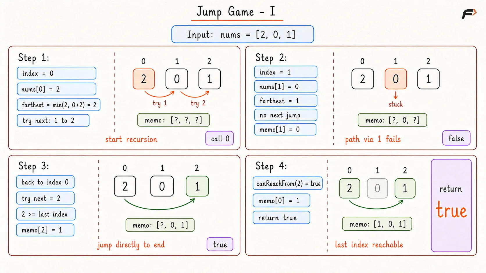
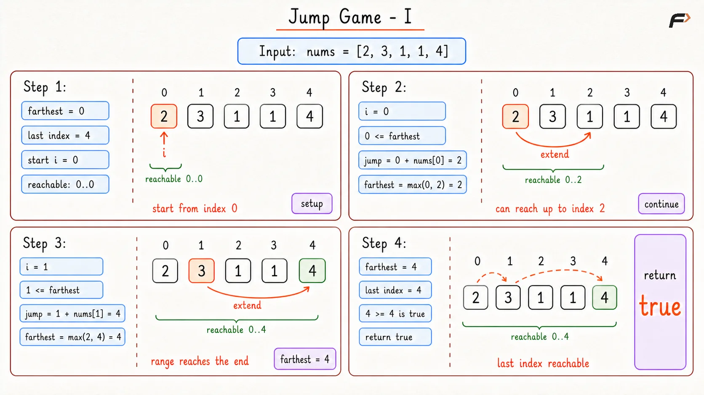

Jump Game I: Can You Reach the Last Index?
You are given an integer array nums. You are initially positioned at the array's first index, and each element in the array represents your maximum jump length from that position.
Return true if you can reach the last index of the array, or false if you cannot.
Example 1
Input: nums = [2, 3, 1, 1, 4]
Output: true
Explanation: Start at index 0. From there, jump to index 1.
At index 1, the value is 3, so the last index can be reached.
Example 2
Input: nums = [3, 2, 1, 0, 4]
Output: false
Explanation: No matter how the jumps are chosen, the path gets stuck at index 3.
Since nums[3] = 0, no further jump is possible, so the last index cannot be reached.
Brute Force Approach
From each index, there are multiple jump choices. For example, if nums[i] = 3, then jumps to i + 1, i + 2, and i + 3 are possible.
A direct recursive solution would try all these choices again and again. The repeated work happens because the same index can be reached from many different previous indices.
So, use memoization. For every index, store whether it is possible to reach the last index from there. Once the answer for an index is known, reuse it instead of solving that index again.
Algorithm
Start recursion from index
0because the journey begins at the first position.If the current index is already at or beyond the last index, return
truebecause the destination has been reached.If the current index was solved before, return the stored answer to avoid repeated recursion.
Try every jump length from
1tonums[index], because each value tells the maximum jump allowed.If any jump leads to an index that can reach the end, store
truefor the current index and return it.If none of the jumps work, store
falseand return it.
Dry Run

Jump Game 1 Brute Dry Run
Solution
#include <bits/stdc++.h>
using namespace std;
class Solution {
public:
/*
Checks whether the last index can be reached
from the given index using recursion and memoization.
*/
bool canReachFrom(int index, vector<int>& nums, vector<int>& memo) {
/*
If index reaches or crosses the last position,
the destination is reachable.
*/
if (index >= nums.size() - 1) {
return true;
}
/*
If this index was already solved, reuse the
stored answer instead of recalculating it.
*/
if (memo[index] != -1) {
return memo[index] == 1;
}
/*
farthest stores the last index that can be tried
from the current position.
*/
int farthest = min((int)nums.size() - 1, index + nums[index]);
for (int next = index + 1; next <= farthest; next++) {
/*
If any reachable next index can reach the end,
the current index is also successful.
*/
if (canReachFrom(next, nums, memo)) {
memo[index] = 1;
return true;
}
}
/*
If no jump from this index works, mark it as
unable to reach the last index.
*/
memo[index] = 0;
return false;
}
/*
Returns true if the last index can be reached
from the first index using DP memoization.
*/
bool canJump(vector<int>& nums) {
/*
memo stores -1 for unknown, 0 for false,
and 1 for true.
*/
vector<int> memo(nums.size(), -1);
return canReachFrom(0, nums, memo);
}
};
// Driver code starts
int main() {
Solution solution;
vector<int> nums = {2, 3, 1, 1, 4};
cout << (solution.canJump(nums) ? "true" : "false") << endl;
return 0;
}Complexity Analysis
Time Complexity: O(n2), because from each index, up to n jumps may be checked in the worst case.
Space Complexity: O(n), because memoization and recursion stack space are used which correspond to the length of array.
Optimal Approach
At any index, there may be many possible jumps. A beginner’s first thought might be to try every jump and see if one path reaches the end. That works logically, but it creates many repeated paths.
The useful observation is this: the exact path does not matter. Only the farthest index reachable so far matters.
Suppose the farthest reachable index is farthest. While scanning the array, every index i such that i <= farthest is reachable. From that index, another jump may extend the reachable area to i + nums[i].
If an index i becomes greater than farthest, that means there is a gap that cannot be crossed. The current index itself cannot be reached, so anything after it cannot be trusted either.
So the greedy idea is: Keep expanding the farthest reachable index. If the last index comes inside that range, return true. If the scan reaches an index outside that range, return false.
Algorithm
Start with
farthest = 0because at the beginning only index0is surely reachable.Traverse the array from left to right because reachability grows forward from the starting index.
Before using index
i, check whetheri > farthest. This check is needed because an unreachable index cannot be used to make another jump.If index
iis reachable, updatefarthestwithmax(farthest, i + nums[i]). This keeps the best reachable boundary found so far.If
farthestbecomes greater than or equal to the last index, returntruebecause reaching or crossing the last index is enough.If the loop finishes without getting stuck, return
truebecause every needed position was reachable.
Dry Run

Jump Game 1 Optimal Dry Run
Solution
#include <bits/stdc++.h>
using namespace std;
class Solution {
public:
/*
Returns true if the last index can be reached
from the first index using greedy reach tracking.
*/
bool canJump(vector<int>& nums) {
/*
farthest stores the maximum index that can be
reached using the jumps seen so far.
*/
int farthest = 0;
for (int i = 0; i < nums.size(); i++) {
/*
If the current index is beyond farthest,
this position cannot be reached.
*/
if (i > farthest) {
return false;
}
/*
From a reachable index, try to extend the
farthest reachable position.
*/
farthest = max(farthest, i + nums[i]);
/*
If the reachable range already covers the
last index, the answer is confirmed.
*/
if (farthest >= nums.size() - 1) {
return true;
}
}
return true;
}
};
// Driver code starts
int main() {
Solution solution;
vector<int> nums = {2, 3, 1, 1, 4};
cout << (solution.canJump(nums) ? "true" : "false") << endl;
return 0;
}Complexity Analysis
Time Complexity: O(n), because the array is scanned once.
Space Complexity: O(1), because constant space is used.
Interview follow-up Questions
Making the maximum jump is a flawed strategy because it ignores the contents of the squares you land on. If your current value is 3, jumping the full 3 steps might force you to land on a 0 (which traps you). However, jumping only 1 step might land you on a massive number like 10, which easily carries you to the finish line. The greedy maxReach variable elegantly solves this by considering the maximum potential of all accessible squares.